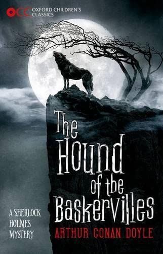

I am a foodie. I go out and eat a lot of street food. At times, I cook my favorite dish at my place and have it along with my family. Apart from cooking, i like riding bikes and capturing photographs.
This book is my first interesting English novel. It was a part of our academics in my high school. I liked the thrilling narration by my faculty and later on, when I tried to read the book, i found it very interesting.
